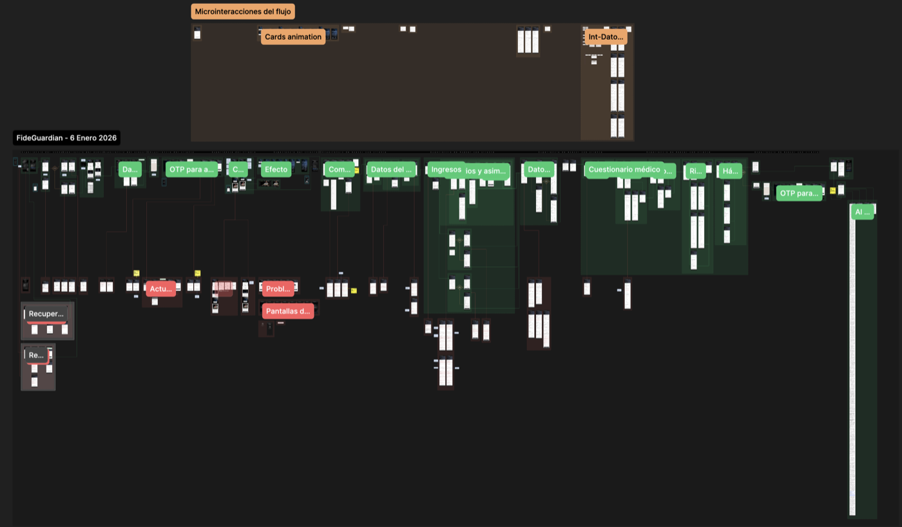

Segmento ultra-premium
Este proyecto nació como una iniciativa enfocada en clientes de alto poder adquisitivo interesados en departamentos de lujo de entre $10 y $40 MDP.
Diseño de una cotización hipotecaria con una compra obligatoria de BTC integrada al enganche.
 Vista animada del cotizador
Vista animada del cotizadorEste proyecto nació como una iniciativa enfocada en clientes de alto poder adquisitivo interesados en departamentos de lujo de entre $10 y $40 MDP.
El proceso de enganche incluía una compra obligatoria de Bitcoin equivalente al 10% del valor del inmueble.
La hipótesis era que esa inversión pudiera crecer hasta alcanzar el saldo de la deuda: aproximadamente en 8 años para un plazo de 10 años y en 10 años para un plazo de 20 años.
La interfaz debía ayudar a comparar el plazo de la hipoteca con el crecimiento estimado de la inversión en BTC, sin ocultar los supuestos del modelo.
El escenario mostraba cómo una inversión equivalente al 10% del inmueble podía alcanzar la deuda antes del plazo contratado, según la proyección del producto.
La comparación permitía explicar que la proyección dependía del plazo seleccionado y de la evolución estimada de la inversión.
Escenarios y tiempos expresados como proyecciones del producto; no representan resultados posteriores al lanzamiento.
El producto heredó un flujo de usuario basado en otro producto genérico, denso y visualmente desconectado del target de lujo.
Esa primera versión fue rechazada fuertemente por dirección. Hubo que rediseñar todo desde cero para reflejar exclusividad, reducir la fricción cognitiva en procesos legales densos y acomodar un modelo financiero híbrido (TradFi + Web3) altamente complejo.
Combinamos entrevistas con asesores de venta, investigación con usuarios reales, focus groups y benchmark competitivo. Debido a la dificultad de acceder de forma constante al segmento ultra-premium, utilizamos usuarios sintéticos como apoyo exploratorio para complementar la validación de hipótesis.
Los usuarios sintéticos complementaron la investigación con personas reales; no la sustituyeron.
La investigación buscó entender si el flujo era fácil de recorrer, intuitivo y útil para centralizar la cotización y ayudar a los asesores a responder las dudas de sus clientes.
Cada tarjeta conecta un hallazgo de investigación con la decisión de diseño que tomamos.
La relación entre hipoteca, BTC y plazo era difícil de explicar.
DecisiónReorganizar la arquitectura de información y mostrar escenarios comparables.
El asesor necesitaba cambiar entre herramientas.
DecisiónCentralizar la cotización y sus variables principales en un mismo flujo.
El onboarding concentraba demasiada información legal y financiera.
DecisiónAplicar progressive disclosure y dividir el recorrido en pasos guiados.
Los cambios se perdían entre diseño, negocio y desarrollo.
DecisiónCrear un sistema de control de cambios visible en Figma.
A lo largo del proyecto, enfrentamos tres grandes obstáculos técnicos y de negocio que resolvimos mediante diseño estratégico:
El onboarding legal exigía datos fiscales, de identidad, cuestionarios médicos y carga de documentos por limitantes de prevención de lavado de dinero. Todo eso en un modelo inicial con un sistema de datos precario.
Vincular el costo del inmueble, el enganche dinámico, la inversión del 10% en BTC y los plazos a 10 a 20 años en una sola pantalla era un reto de arquitectura de información masivo.
Convertimos las decisiones de diseño en un recorrido navegable para validar la cotización, el onboarding y la relación entre hipoteca y BTC.
El prototipo permitió revisar estados, transiciones y dependencias antes del handoff a desarrollo.

fullscreenUn archivo donde el equipo podía explorar los flujos, variantes de la interfaz, tokens y dependencias sin el paso a producción.
Un archivo pulido y versionado para traspaso a desarrollo. Flujos interactivos, mock-ups, especificaciones y design guidelines.
Colaboré en la definición visual y diseñé componentes y pantallas de la PWA. El UI Kit organizó patrones para mantener consistencia durante las iteraciones y facilitar el handoff.
Documenté variantes, tokens, dependencias y especificaciones para que el equipo pudiera pasar del prototipo a una implementación consistente.
El segmento era difícil de reclutar. Entrevistamos a 11 de las 20 personas estimadas y usamos las sesiones disponibles para validar el recorrido, la claridad del producto y la experiencia de cotización.
Los cambios repentinos de negocio y desarrollo amenazaban la estabilidad del diseño.
La Solución: Ideé un sistema de Control de Cambios nativo en Figma y lo automaticé creando un plugin con AI (GPT-4) para acelerar el proceso de documentación. Creé un componente-card para documentar ajustes directamente en el canvas e iterando sobre el historial de versiones de Figma; logrando mantener a desarrollo, diseño y stakeholders alineados sin depender de interminables hilos de correo, CRMs o docs desactualizados.
Al momento de mi salida, el producto no se había lanzado a producción. Diseñé el flujo de cotización y solicitud, el UI Kit y la documentación para desarrollo. No cuento con resultados posteriores al lanzamiento; por eso presento los hallazgos, decisiones y entregables del proceso, sin atribuir métricas de negocio posteriores.
Aprendizaje clave: La innovación no siempre significa implementar la última tecnología disponible (como automatizar el cotizador con IA). A veces, la verdadera innovación es resolver interacciones técnicas y legales densas de forma amena y utilizar la arquitectura de la información, el UX Writing y el Design Ops para entregar una experiencia premium.